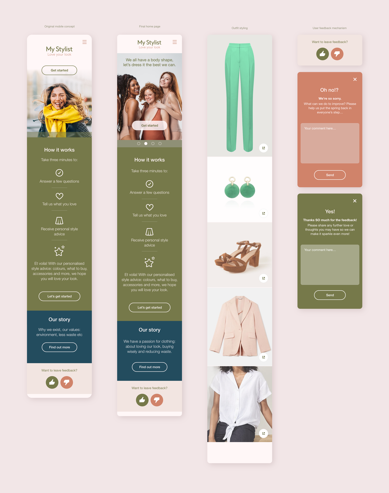
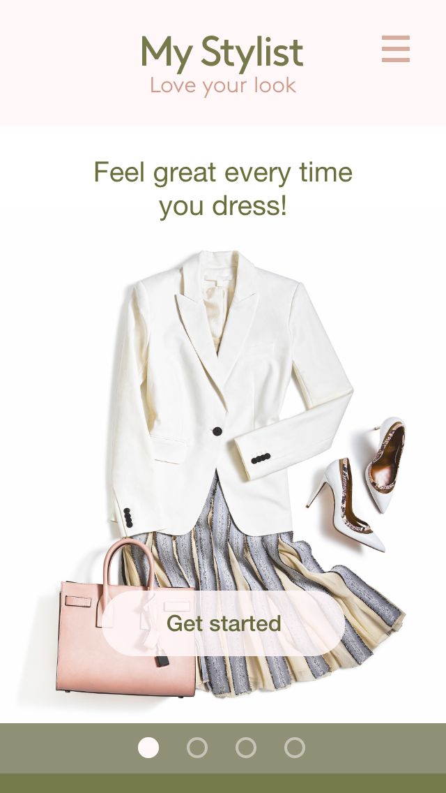
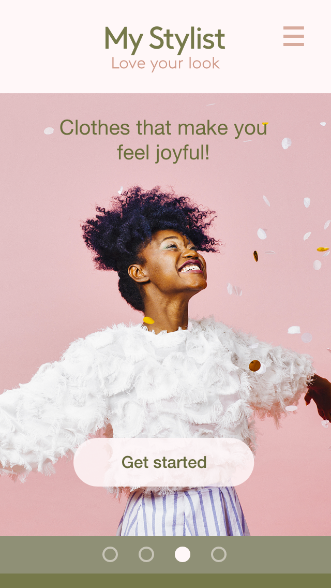
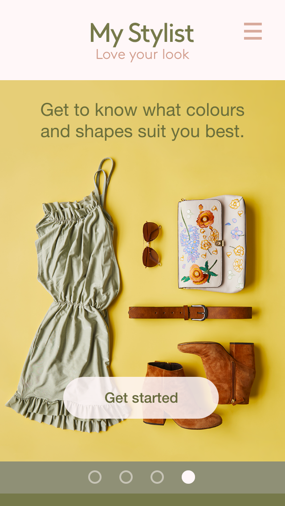
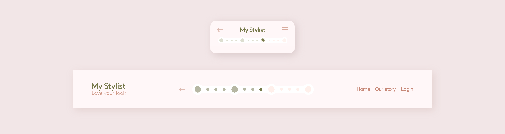
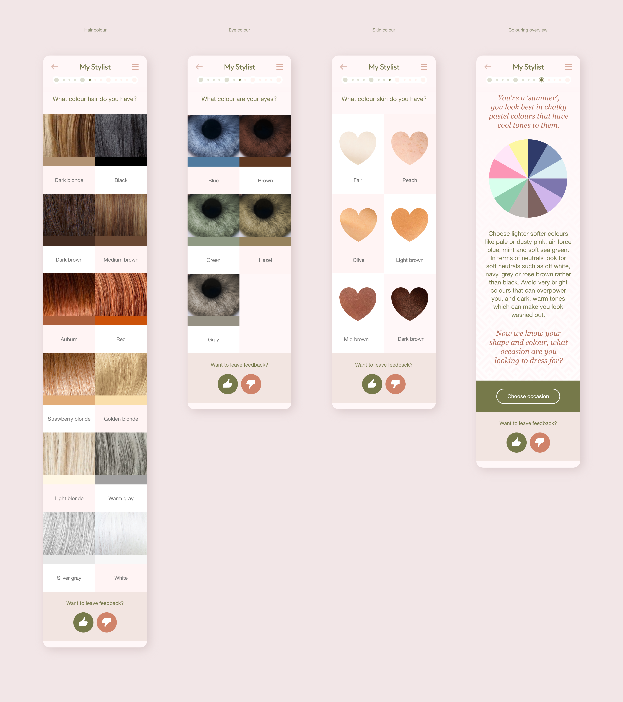
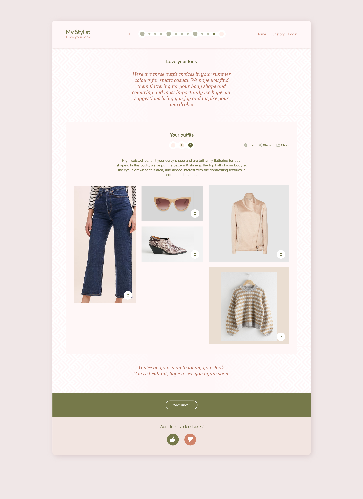
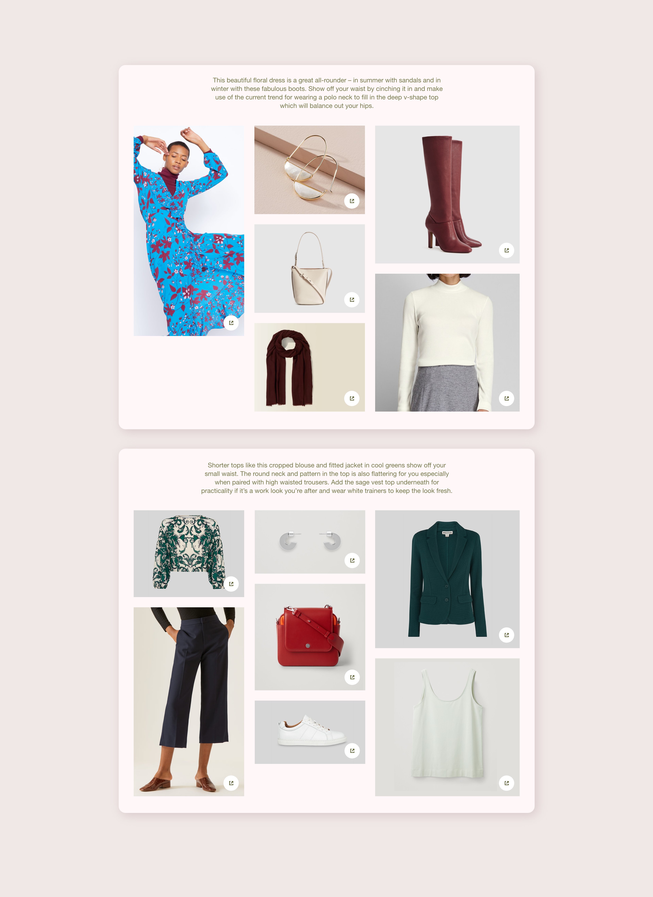
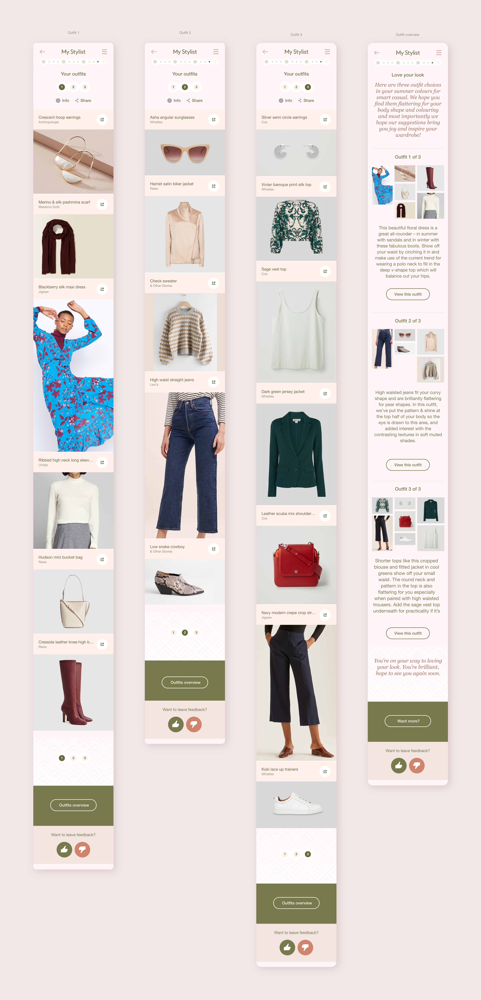

A start-up from two women with a passion for fashion, one from a corporate business background, the other an experienced stylist. Together we created a web app for women, bringing personal styling, and joy, through the tailored results!
The homepage for My Stylist needed to be inclusive, catering for women of all shapes and sizes; be light, friendly and communicate joy. The image I used spanned those concepts well; the human diversity is beautiful, the palette: gentle, feminine and modern; the joy, palpable.

Above are four mobile user interface designs including: the original mobile UI design concept, final homepage design, clothing design elements and user feedback designs.



Shown here are three differing images from the homepage carousel and a video. The video briskly runs through the whole mobile styling process.
Some of the brand elements I designed for the project including: logo design, pattern design and some early app visuals containing suggested photography, giving the client a flavour of what would follow.

Navigation for the styling journey. Dots signify user steps, each requiring minimal clicks to advance. The four key stages (indicated by larger dots) - brands & shape, coloring, occasion, and budget - culminate in personalized style insights. These personalised insights bolster a woman's styling confidence and her faith in the app journey.

The mobile UI design work above shows the colouring phase of the styling journey. The colour wheel image gives 'personalised style insights' based on a user's unique colour selections.

At the end of the styling discovery process - the user journey - three outfits are suggested based on their personal criteria. Here is one of the outfits. A user can then click affiliate links to purchase items they liked.

Other outfit style examples that could be recommended.

Here is how those three outfits would be displayed on mobile along with the overview page, where all outfits are previewed alongside helpful styling information for the user. (If you're viewing on handheld devices I just put two of the outfits)
This video demonstrates the brand selection page on desktop which was the first of the style steps. A user selects the brands they love and this influences the style algorithm's output, ultimately giving them unique personalised style advice.